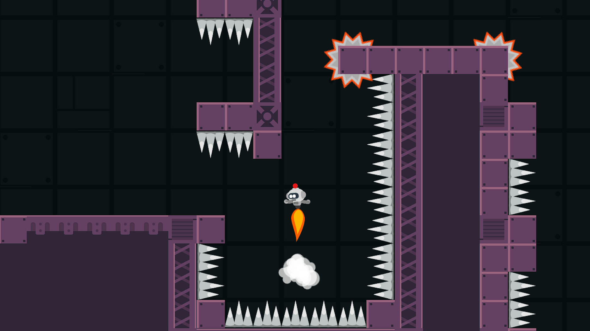

Z.I.P
While developing Tainted Lands my biggest struggle was managing scope and being able to create something complete in a short period of time. Game Jams were the perfect opportunity not only to hone that skill, but also to work with other developers and improve my programming and design skills further. Indie Game Jam Beginners #003 is where I met a few other beginner developers and we managed to form a group of 5 to create something we were proud of.
My main roles throughout this Jam were Programmer and Level Designer, since the Game Design itself was a collaborative effort within all the members. I created and fine-tuned the Player Controller, the Movement Options such as the Wall Jump, Double Jump and Float Mechanics, the Power-up Terminal, the Checkpoints and the Scene Transitions. I also hand-crafted the Level Design for the entire game, and played a main role in the decision-making for the game.